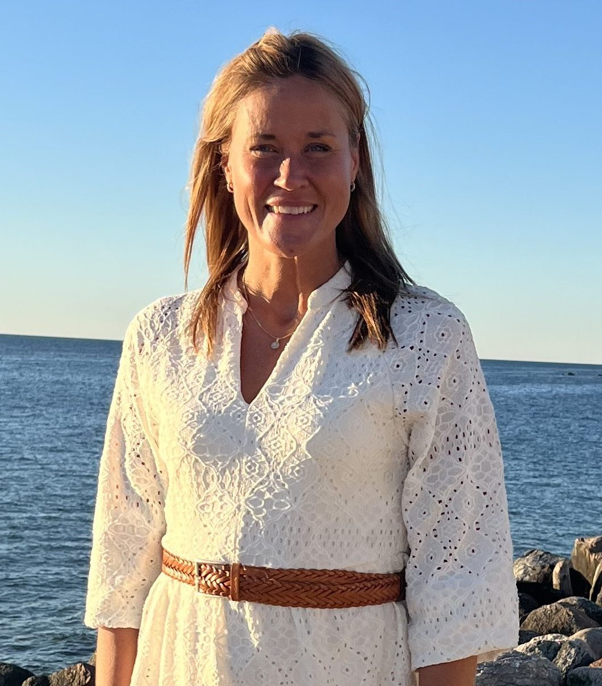
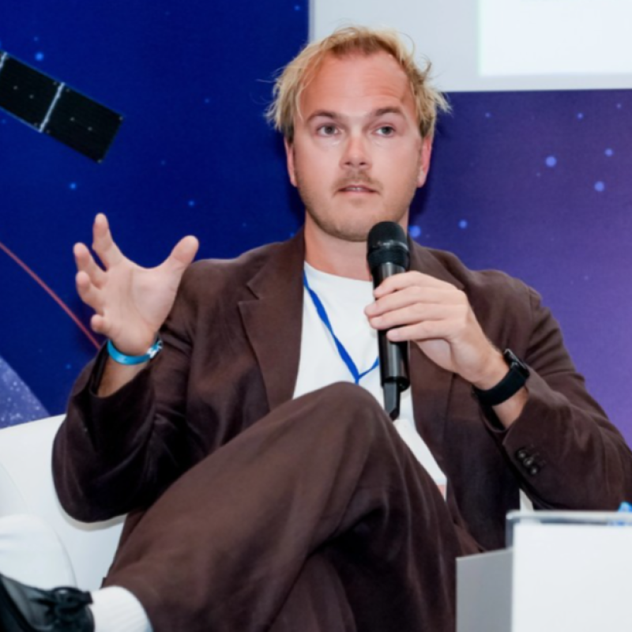
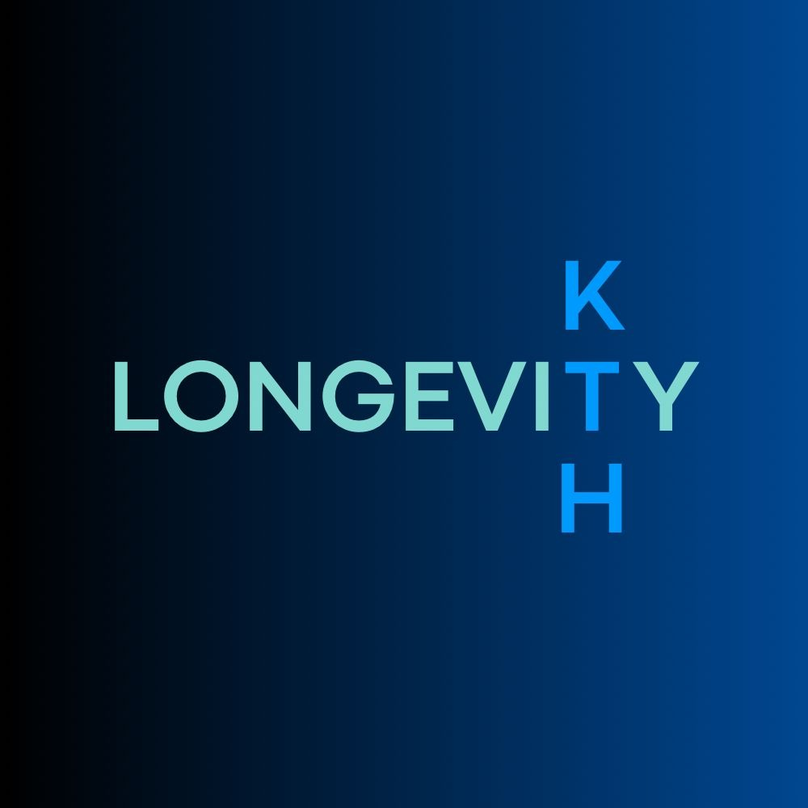
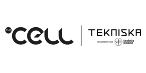

Föreläsare

Inga Ljung, VD Cytiva
Vi har glädjen att välkomna Inga Ljung, som studerade till civilingenjör inom kemiteknik vid Umeå universitet och idag är Managing Director och Site Leader på Cytiva i Uppsala! Under föreläsningen kommer Inga att dela med sig av sin karriärresa, från studietiden i Umeå till ledande roller inom life science-industrin. Hon berättar om viktiga vägval, utmaningar och erfarenheter som har format hennes yrkesliv. Ta chansen att inspireras av hennes resa och få värdefulla perspektiv på vilka möjligheter som väntar efter examen!
Zozium
Redo att kickstarta din karriär inom Life Science? Kom på vår lunchföreläsning! Funderar du på vad nästa steg är efter plugget? Vill du veta hur det faktiskt är att jobba som konsult? Då får du inte missa vår lunchföreläsning den 6 november! Du kommer att få hänga med vår VD Helena Hessle och vår stjärna Julia Dahl – som gick raka vägen från studierna direkt till oss på Zozium! De kommer att berätta allt om konsultlivet, hur vår vardag ser ut och vad som gör vår arbetsplats så speciell. Vilka är Zozium? Vi är ett specialiserat konsultbolag inom Life Science som driver komplexa projekt från utveckling till tillverkning. Men det som verkligen utmärker oss är vår kultur. Vi jobbar med inspiration från organisationsmodellen Teal, vilket innebär att vi är en arbetsplats helt utan traditionella chefer. Istället styrs vi av självorganiserande team där tillit, delaktighet och självledarskap står i fokus. För oss handlar det om att skapa frihet, framgång och positiv energi – tillsammans!
Tor Blomqvist
Hur odlar vi mat på månen eller Mars – och hur skapar vi ett livsmedelssystem som kan försörja människor långt från jorden? Tor Blomqvist är agronom, tidigare kock och industridoktorand vid KTH i samarbete med German Aerospace Center (DLR). Hans forskning fokuserar på rymdjordbruk och hur biologiska produktionssystem kan möjliggöra självförsörjande livsmedelsförsörjning under långa rymdexpeditioner. Han är även medgrundare av Deep Space Food Consortium och har varit expertbedömare för NASA:s Deep Space Food Challenge.
KTH Longevity
KTH Longevity samlar studenter, forskare och företag kring vetenskapen bakom ett längre, friskare liv. Vi är en studentdriven förening för dig som vill förstå hur vi åldras och hur forskning och teknik kan förändra det. Vi vill visa hur du som bioteknikstudent kan vara med och utveckla framtidens behandlingar och bidra till fler friska år i livet. Nu växer vi med fler samarbeten och nya event. Nyfiken på mer? Följ oss på Instagram @kthlongevity.Studiebesök

The Cell är en plats där forskning, konst och filosofi förenas i nya former. Genom utställningar, interaktiva upplevelser och samtal utforskar vi livets stora frågor och utmanar sättet vi ser på världen. Här möts kreativitet och vetenskap för att skapa nya perspektiv och insikter. Vi skapar en dynamisk miljö där gränser suddas ut. Under ert besök får ni en visning av utställningen Me You We - exploring human behaviour, och testa några av våra interaktiva stationer.